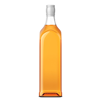
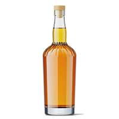
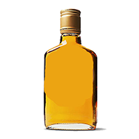
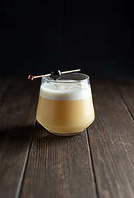
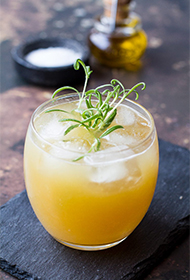
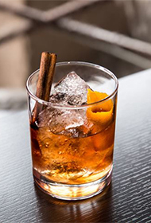

150 AÑOS
Nuestra Historia
Fundada por la familia MacEwen; la matriarca Beth y sus dos hijas, Bonnie y Elsie.
Sionnach combina lo viejo con lo nuevo, y deconstruye un producto tan tradicional y centenario como el whisky.
Feminista, independiente, aventurero... Este es el espíritu que nos guía.
Sionnach es una mezcla de malta joven y fuerte, con la suavidad del centeno.
Nuestros Whiskies
Esto nos da un producto de gran calidad, a un precio accesible.
Reserva 12 años
Original Blend
Special Edition
Recetas
Cocktails riquísimos para compartir con todos tus amigxs y familia.

Whisky Sour
- Añade en una coctelera Whisky Sionnach, jugo de limón, clara de huevo y azúcar
- Agita vigorosamente la coctelera unos 10 segundos sin ningún hielo
- Añade unos hielos a la mezcla y agítala otra vez unos 10 segundos
- Cuela el Whisky Sour en dos copas de whisky con hielos

Penicillin
- Pondremos dentro de nuestra coctelera jugo de limón recién exprimido, licor de jengibre, y Whisky Sionnach
- Para la parte dulce de esta mezcla, añadiremos miel, pero primero la vamos a diluir a partes iguales con agua caliente y la dejaremos enfriar. De este jarabe, añadiremos 3 cucharadas
- Una vez servidos todos los ingredientes, agitaremos y servimos en vaso bajo

Old Fashioned
- En un vaso añade un el terrón de azúcar y un chorrito de Angostura, deja reposar 2 minutos
- Llenar el vaso de soda o sifón, dependiendo el tamaño del vaso unos 150 ml aproximadamente
- Añade Whisky Sionnach y remueve para disolver el azúcar
- Decorar con las cortezas de cítricos. Añade en una coctelera el whisky, jugo de limón, clara de huevo y azúcar.